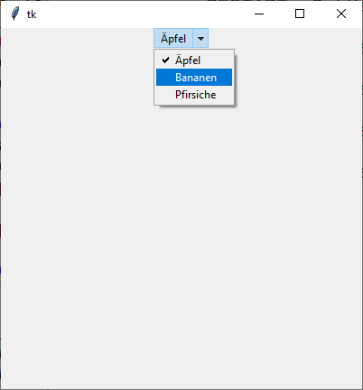

ttk.OptionMenu
Das ttk.OptionMenu ist eine Erweiterung von tkinter, die nicht in den Tcl/Tk-Quellen
vorkommt. Hierbei handelt es sich um einen Nachbau von tk.OptionMenu, der
sich in allen Bereichen wie ein ttk.Menubutton verhält und auch stylen
lässt plus einem klassischen Menü. Die Api ist tk.OptionMenu nachempfunden.
ttk.OptionMenu erzeugen
optm = ttk.OptionMenu(self, Variable, DefaultValue, *Values, Command)
Das folgende Programm zeigt ein Optionsmenü:
import tkinter as tk
from tkinter import ttk
from tkinter import font
class A(tk.Tk):
def __init__(self):
super().__init__()
self.geometry('400x400')
self._createWidgets()
def _createWidgets(self):
values = ('Äpfel', 'Bananen', 'Pfirsiche')
self.svar = tk.StringVar(value=values[0])
optm = ttk.OptionMenu(self, self.svar, values[0], *values,
command=self._onMenu)
optm.pack()
def _onMenu(self, event):
print('Frucht ausgewählt:', self.svar.get() )
if __name__ == '__main__':
window = A()
window.mainloop()